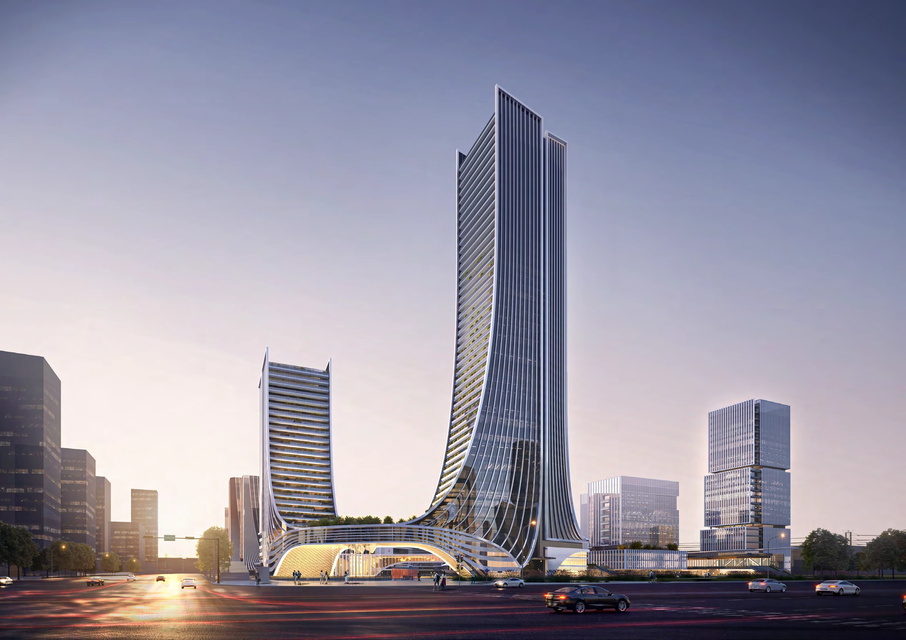

BAIYAN LAKE NEW ECONOMY PARK
柏堰湖新经济产业园（一期）
柏堰之窗，拥绿入园
安徽 · 合肥
研发办公 · 产业社区 / 2023

- 地点
- 安徽 · 合肥
- 年份
- 2023
- 类型
- 研发办公 · 产业社区
- 阶段
- 投标方案
- 参与
- 项目设计参与 · 团队协作
- 设计团队
- 深圳市建筑设计研究总院有限公司合肥分院
PROJECT / 项目
项目位于合肥高新区柏堰湖片区，设计面向山湖景观组织产业社区。外高内低的建筑布局围绕中央景观展开，将塔楼、研发办公及共享空间联系起来，形成向自然打开的园区。
01 / DESIGN向山湖打开
沿场地外围组织建筑高度，向内部释放景观空间，使城市景观与园区绿地相互渗透。
02 / DESIGN组团与公共空间
以研发组团、共享平台与步行路径组织园区日常，兼顾多样化办公与交流需求。
03 / DESIGN建筑形态与空间组织
塔楼曲线、低层组团和多层次景观共同构成整体形象，图纸进一步说明建筑与场地的关系。